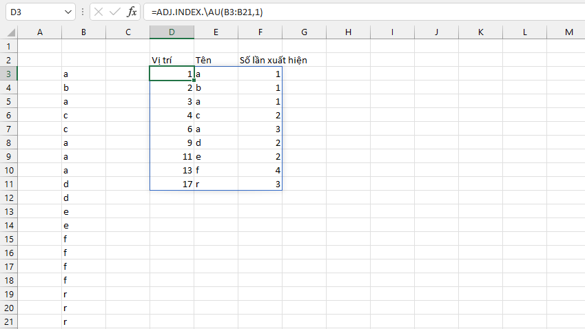
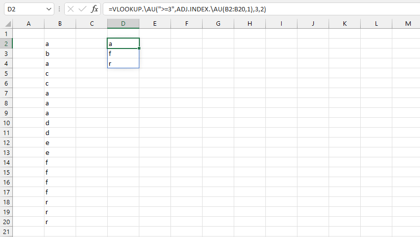

VD1: Tìm số lần lặp lại liên tiếp giá trị 1 trong mảng B4:L4.

VD2: Thống kê các giá trị lặp lại liên tiếp trong mảng B2:B20.
Nhận xét: dễ thấy các phần tử a,f,r có số lần lặp lại >=3.
VD3: Sử dụng các hàm tra cứu để lấy danh sách phần tử cần tìm.
Related function
INCREASE.ADJ Đánh số thứ tự tăng dần theo từng phân nhóm và từng phần tử trong phân nhóm đó.
COLOR Trả về mã màu sắc của ô chỉ định.
Return to Home